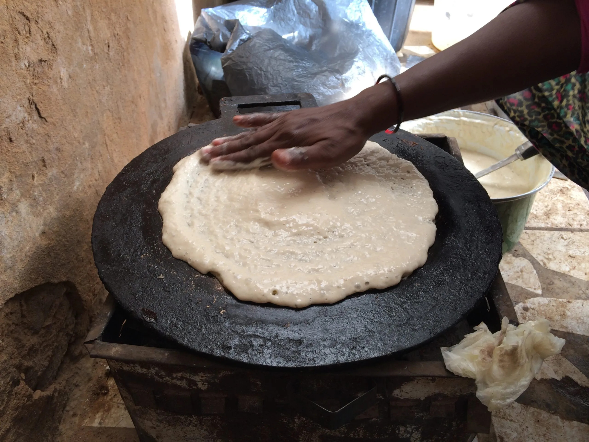

This is a picture of how it looks.

This picture was from Sudanese Kitchen.
This is my moms delicious homemade Gurasa passed down from her mom.
Family Quote: "Love is always put into such a hearty dish to share with others."
Gurasa is one of our most cherished traditional flatbreads. Our family come together sharing food from a common serving platter symbolizing hospitality, unity, and mutual respect. Serving a hearty platter of gurasa is a primary way of our family expressing generosity to eachother and visitors.
Mix the dry ingredients: In a large bowl, combine the whole wheat flour, instant yeast (or baking powder), and salt.
Add the water: Gradually pour in the lukewarm water bit by bit (dont rush this step) while whisking continuously until you get a smooth, thick, pourable batter similar to pancake batter.
Ferment and rest: Cover the bowl with a clean kitchen towel. Let the batter rest and ferment in the fridge for 30 to 45 minutes until it doubles in volume and becomes bubbly.
Heat the pan: Place a skillet, over medium-low heat. Lightly brush it with a thin layer of oil, specifically olive oil.
Pour and cook: Pour a ladleful of the batter onto the warm pan. Gently spread it into a thick, round circle, creating a huge pancake.
Flip and finish: Cook it for 10 minutes until small bubbles form on top and the bottom turns golden-brown. (Instead of flipping the bread we skip the flipping to keep the top spongy and porous).
Stack and serve: Remove the Gurasa and stack the warm pieces under a clean cloth to keep them soft. Serve warm with meat stews and left over Bamya.
For one-two people: 1/2 cup of whole wheat flour, a pinch of salt, 1/2 tablespoon of yeast, 1 1/2 cups of water.
For three people: 1 1/2 and a half cups of whole wheat flour, a pinch of salt, 1 tablespoon of yeast, 2 cups of water.
For four people: 2 cups of whole wheat flour, a pinch of salt, 1 tablespoon of yeast, 3 cups of water.